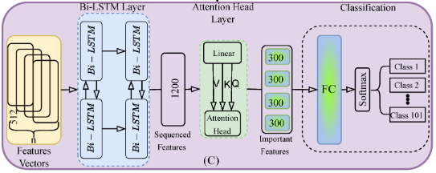

About Me
I'm a robotics engineer and PhD student with a strong focus on mobile robotics, computer vision, and SLAM. I have hands-on experience in ROS, AI, and embedded systems, and I enjoy turning complex robotic problems into practical solutions. I'm passionate about research and development, and I regularly share my knowledge through projects, blogs, and tutorials. My goal is to become an expert in robotics and contribute to real-world applications that make a difference.
AIBOMECH LAB
AIBOMECH Lab is where I regularly publish my academic research, hands-on robotics projects, and technical blogs. It’s a space dedicated to sharing my ongoing work in robotics, AI, and computer vision — including peer-reviewed papers, real-world experiments, and step-by-step tutorials. Whether you're a researcher, student, or enthusiast, you'll find valuable insights and practical applications here.
Publications
Multi-Head Attention-Based Framework with Residual Network for Human Action Recognition
This paper proposes a deep learning framework combining ResNet-18, Bi-LSTM, and multi-head attention for accurate and efficient human action recognition. It achieves 96.60% accuracy on the UCF-101 dataset and was validated on a mobile robot for real-time deployment.
Read Full PaperIf you wish to cite this paper:
@article{al2025multi,
title={Multi-Head Attention-Based Framework with Residual Network for Human Action Recognition},
author={Al-Tawil, Basheer and Jung, Magnus and Hempel, Thorsten and Al-Hamadi, Ayoub},
journal={Sensors},
year={2025},
publisher={Multidisciplinary Digital Publishing Institute}
}
Mobile Robot Navigation with Enhanced 2D Mapping and Multi-Sensor Fusion

This paper presents an enhanced SLAM framework for mobile robot navigation that integrates RGB-D cameras and 2D LiDAR sensors. A novel fusion strategy projects RGB-D point clouds into 2D and denoises them alongside LiDAR data. The enhanced Gmapping (EGM) algorithm adds adaptive resampling and degeneracy handling, improving robustness.
Read Full PaperIf you wish to cite this paper:
@article{al2025mobile,
title={Mobile Robot Navigation with Enhanced 2D Mapping and Multi-Sensor Fusion},
author={Al-Tawil, Basheer and Candemir, Adem and Jung, Magnus and Al-Hamadi, Ayoub},
journal={Sensors},
volume={25},
number={8},
pages={2408},
year={2025},
publisher={MDPI}
}
A Review of Visual SLAM for Robotics: Evolution, Properties, and Future Applications

This review explores the evolution and recent advancements of Visual SLAM (V-SLAM) for robotic systems. It provides selection criteria and comparative insights into major V-SLAM methods, emphasizing their integration with ROS middleware and evaluating them using key benchmark datasets.
Read Full PaperIf you wish to cite this paper:
@article{al2024review,
title = {A Review of Visual SLAM for Robotics: Evolution, Properties, and Future Applications},
author = {Al-Tawil, Basheer and Hempel, Thorsten and Abdelrahman, Ahmed and Al-Hamadi, Ayoub},
journal = {Frontiers in Robotics and AI},
volume = {11},
year = {2024},
publisher = {Frontiers},
doi = {10.3389/frobt.2024.1347985}
}
Design and Analysis of a Four DoF Robotic Arm with Two Grippers Used in Agricultural Operations

This paper proposes a novel 4DoF robotic arm with dual grippers for multitasking in agricultural applications. It incorporates kinematic and dynamic modeling using the D-H method and Lagrangian mechanics, while integrating with ROS for system-level control. The design enhances flexibility and compatibility with IoT and other agricultural hardware, offering a new approach to automation in precision farming tasks.
Read Full PaperIf you wish to cite this paper:
@article{altawil2023design,
title={Design and analysis of a four dof robotic arm with two grippers used in agricultural operations},
author={Altawil, Basheer and Can, Fatih Cemal},
journal={International Journal of Applied Mathematics Electronics and Computers},
volume={11},
number={2},
pages={79--87},
year={2023},
publisher={{\.I}smail SARITA{\c{S}}}
}
Projects
üå°Ô∏è Temperature Control Using Fuzzy Logic
A smart temperature control system implementing fuzzy logic principles for precise environmental management. This project demonstrates how fuzzy logic can be applied to create more natural and human-like control systems.
View Projectüî¶ Laser Belt Marking Machine
A fully automated system that synchronizes a moving belt with a fiber laser marker for precise and consistent product labeling. Designed with embedded control, custom UI, and mechanical integration.
View Project5DoF Robot Arm with ROS MoveIt
A custom-designed 5DoF robotic arm built in SolidWorks, converted to URDF, and integrated with ROS MoveIt for motion planning, simulation, and control in Gazebo and RViz.
View ProjectBlog
Robot Kinematics & Dynamics: Basic Definitions and Design
Understanding the fundamental principles of robot movement and how different parts interact to create coordinated motion.
Read More...Robot Manipulators Design - Part 1
An in-depth exploration of robot manipulator design principles, focusing on mechanical considerations and degrees of freedom.
Read More...Robot Manipulators Design - Part 2
Advanced topics in manipulator design, including workspace analysis, singularities, and performance optimization.
Read More...Mechanisms of Machines & Their Benefits
Exploring various mechanical systems and how they contribute to machine functionality, efficiency, and reliability.
Read More...Microcontrollers: The Hidden Power Behind Smart Devices
Discover how these tiny computers enable countless smart devices and how they're programmed to perform complex tasks.
Read More...From Ideas to Reality: Arduino Microcontroller Essentials
A practical guide to getting started with Arduino platforms for robotics and automation projects.
Read More...Contact Me
If you're interested in research partnerships, project collaborations, or business ventures in robotics, AI, computer vision, or other fields, feel free to get in touch! I'm also open to working with investors and business professionals. Let's collaborate!
Location
Based in Germany
Quick Contact
Have a question or opportunity to share? Fill out the form and I’ll get back to you soon!